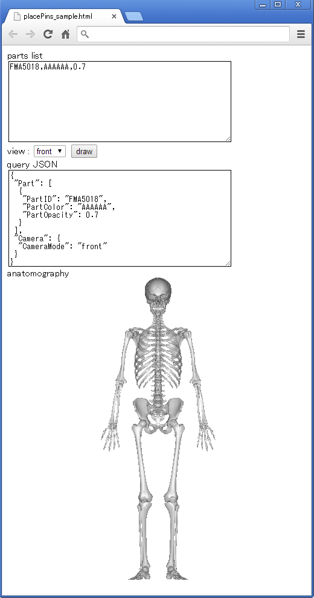
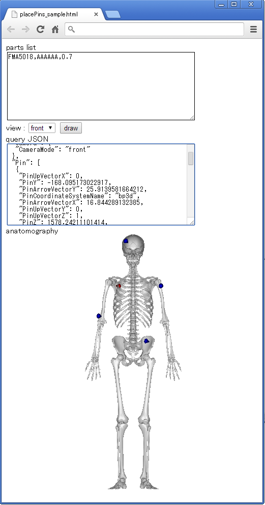

Anatomography Map API サンプルコード - html + javascript - 画像をクリックしてPinを打つ
概要画像上をクリックして、交差する三次元空間上の座標を取得し、その場所にPinを打つようにJSONを生成して再描画します。Pinは最大10件まで保持し、最新のPinは赤、それ以外は青で描画するようにします。サンプルコード空のhtmlファイルを作成し、テキストエディタで以下の内容をコピー＆ペースト、保存して下さい。
<html>
<head>
<!-- load google hosted jquery library -->
<script src="http://ajax.googleapis.com/ajax/libs/jquery/2.0.3/jquery.min.js"></script>
<script type="text/javascript">
$(function() {
var bp3dApiBase = "http://lifesciencedb.jp/bp3d/API/";
var pinAry = new Array();
$("#drawbutton").click(function () { // define draw button click event
drawAnatomography(); // draw anatomography
});
$("#anatomography").click(function (e) { // define anatomography image click event
var areaOffset = $("#anatomography").offset(); // get image offset
var offsetTop = Math.floor((e.pageY)-(areaOffset.top)); // calc y-coordinate of clicked point
var offsetLeft = Math.floor((e.pageX)-(areaOffset.left)); // calc x-coordinate of clicked point
var queryObj = getJsonObj(); // get query JSON object
var pickObj = new Object(); // define pick object
pickObj["MaxNumberOfPicks"] = 1; // pick only nearest point
pickObj["ScreenPosX"] = offsetLeft; // set ScreenPosX as x-coordinate of clicked point
pickObj["ScreenPosY"] = offsetTop; // set ScreenPosY as y-coordinate of clicked point
queryObj["Pick"] = pickObj; // set "Pick" as pickObj
$.ajax({
type: "GET",
url:bp3dApiBase + "pick?" + JSON.stringify(queryObj, null, ""), // use pick method of Anatomography map API
dataType:'jsonp', // the result will be returned by jsonp
timeout:5000,
success: function(jsonObj) {
if (jsonObj["Pin"][0] != undefined) { // if valid point was returned
jsonObj["Pin"][0]["PinColor"] = "FF0000"; // set pin color as red
if (pinAry.length >= 10) { // if number of pins is more than 10
pinAry.shift(); // remove first pin
}
for (var i = 0; i < pinAry.length; i++) { // for every old pins
pinAry[i]["PinColor"] = "0000FF"; // set pin color as blue
}
pinAry.push(jsonObj["Pin"][0]); // append returned pin
drawAnatomography(); // draw anatomography
}
},
error: function(XMLHttpRequest, textStatus, errorThrown) {
alert(textStatus);
}
});
});
function getJsonObj () { // this function returns query JSON object
var queryObj = new Object(); // define object for query JSON
queryObj["Part"] = new Array(); // define part as array
var partsAry = $("#partslist").val().split(/\r\n|\r|\n/); // get parts list from textarea and split by linefeed
for (var i = 0; i < partsAry.length; i++) { // for loop to deal each parts
if (partsAry[i].length == 0) { // in case of empty line
continue; // nothing to do
}
var partInfoAry = partsAry[i].split(","); // split by comma to separate part id, color, opacity
var partObj = new Object(); // define new part object
partObj["PartID"] = partInfoAry[0]; // set PartID of part object
partObj["PartColor"] = partInfoAry[1]; // set PartColor of part object as hexadecimal code
partObj["PartOpacity"] = parseFloat(partInfoAry[2]); // set PartOpacity of part object
queryObj["Part"].push(partObj); // add part object to json object
}
var cameraObj = new Object(); // define camera object
cameraObj["CameraMode"] = $("#view").val(); // set CameraMode of camera object as set by user
queryObj["Camera"] = cameraObj; // add camera object to json object
if (pinAry.length > 0) { // if pin array have any element
queryObj["Pin"] = pinAry; // add pinAry as Pin object
}
return queryObj;
}
function drawAnatomography () { // draw anatomography image with current setting and pins
var queryObj = getJsonObj(); // get query JSON object
var jsonString = JSON.stringify(queryObj, null, " "); // convert JSON object to JSON string
$("#json").val(jsonString); // display JSON string in textarea
$("#anatomography").attr('src', bp3dApiBase + "image?" + jsonString); // update img src to show anatomography
}
drawAnatomography();
})
</script>
</head>
<body>
parts list<br />
<!-- text area of part id list for drawing -->
<textarea id="partslist" rows="10" cols="50" >FMA5018,AAAAAA,0.7</textarea><br />
<!-- drop down list for camera view selection -->
view : <select id="view"><option value="front" selected>front</option><option value="left">left</option><option value="back">back</option><option value="right">right</option></select>
<button id="drawbutton">draw</button><br />
query JSON<br />
<!-- text area for requested JSON string -->
<textarea id="json" rows="10" cols="50" ></textarea><br />
anatomography<br />
<!-- img tag to show anatomography -->
<img id="anatomography" src=''>
</body>
</html>
 画像上でマウスクリックをすると該当位置に赤いピンが打たれます。さらにクリックすることで最大10個のピンが表示されます。ピンを打つごとにJSON文字列が変更されている点を確認して下さい。  Pinのconfigurationを記述したときのJSON文字列は下記のようになっています。
{ JSONオブジェクトとして渡すため{で始めます
"Part": [ パーツの定義をするために"Part"というキーに対する配列（[で始まり）を定義します
{ 1番目のパーツをオブジェクトとして定義します（オブジェクトなので{で始まる）
"PartID": "FMA5018", 1番目のパーツの"PartID"キーに対して"FMA5018"という値を設定します
"PartColor": "AAAAAA", "PartColor"キーに対して"AAAAAA"という値を設定します。キーが続くので,を記述します
"PartOpacity": 0.7 "PartOpacity"キーに対して0.7を設定します。これ以上のキーは無いので,は不要です
} 1番目のパーツ定義の終了（}）
], パーツ配列定義の終了(]）と、次のカメラ定義があるため区切り文字(,)を記述します
"Camera": { カメラの定義をするために"Camera"というキーに対するオブジェクトを定義します
"CameraMode": "front" "CameraMode"というキーに対して"front"という値をセットします
}, カメラの定義終了（}）。引き続きPinの定義があるため区切り文字(,)を記述します
"Pin": [ ピンの定義をするために"Pin"というキーに対する配列（[で始まり）を定義します
{ 1番目のピンをオブジェクトとして定義します（オブジェクトなので{で始まる）
"PinX": -3.40, 1番目のピンのX座標を指定
"PinY": -177.18, 1番目のピンのY座標を指定
"PinZ": 1564.58, 1番目のピンのZ座標を指定
"PinArrowVectorX": 0.56, 1番目のピンの方向を示すベクトルのX要素を指定
"PinArrowVectorY": 34.12, 1番目のピンの方向を示すベクトルのY要素を指定
"PinArrowVectorZ": 0.63, 1番目のピンの方向を示すベクトルのZ要素を指定
"PinUpVectorX": 0, 1番目のピンのアップベクトルのX要素を指定
"PinUpVectorY": 0, 1番目のピンのアップベクトルのY要素を指定
"PinUpVectorZ": 1, 1番目のピンのアップベクトルのZ要素を指定
"PinCoordinateSystemName": "bp3d", 1番目のピンの座標系名称を指定
"PinPartID": "FJ3200", 1番目のピンのパーツが示すIDを指定
"PinColor": "0000FF" 1番目のピンの色を指定
}, 1番目のピンの定義終了（}）、次のピンがあるため区切り文字（,）を記述
{ 2番目のピンをオブジェクトとして定義します（オブジェクトなので{で始まる）
"PinX": -95.56, 2番目のピンのX座標を指定
"PinY": -64.21, 2番目のピンのY座標を指定
"PinZ": 926.26, 2番目のピンのZ座標を指定
"PinArrowVectorX": -17.73, 2番目のピンの方向を示すベクトルのX要素を指定
"PinArrowVectorY": 28.63, 2番目のピンの方向を示すベクトルのY要素を指定
"PinArrowVectorZ": -5.54, 2番目のピンの方向を示すベクトルのZ要素を指定
"PinUpVectorX": 0, 2番目のピンのアップベクトルのX要素を指定
"PinUpVectorY": 0, 2番目のピンのアップベクトルのY要素を指定
"PinUpVectorZ": 1, 2番目のピンのアップベクトルのZ要素を指定
"PinCoordinateSystemName": "bp3d", 2番目のピンの座標系名称を指定
"PinPartID": "FJ3152", 2番目のピンのパーツが示すIDを指定
"PinColor": "FF0000" 2番目のピンの色を指定
} 2番目のピンの定義終了（}）
] ピン定義配列の終了(]）
} JSONオブジェクトの終了（}）
ここでピンの色以外の各configurationはプログラム中でpickメソッドを用いて取得した値を利用するためどのような数値を指定するかに関しては、分からなくても問題ありません。 また、上記のピンの値は一例ですので、画像上をクリックした位置によりこれらの値は異なります。 |